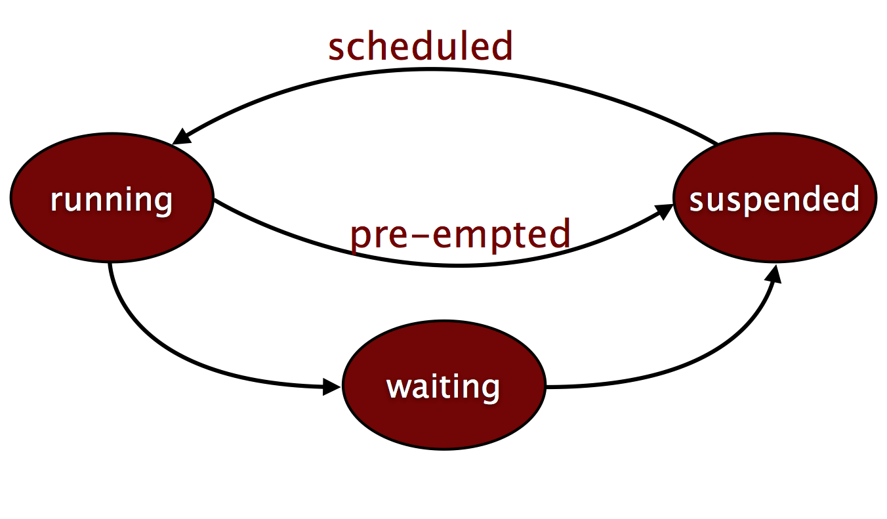

-module(ping).
-export([start/0, send/1, loop/0]).
start() -> spawn_link(ping, loop, []).
send(Pid) ->
Pid ! {self(), ping},
receive pong -> pong end.
loop() ->
receive
{Pid, ping} ->
spawn(crash, do_not_exist, []),
Pid ! pong,
loop()
end.Trace BIFs
Erlang Solutions Ltd.
Trace BIFs
Trace BIF
Trace Flags
Trace Patterns
Trace BIF
erlang:trace(PidSpec, Bool, TraceFlags)
Enables/disables low-level trace mechanisms
Provides data for monitoring execution and memory usage
Used by tools such as the Debugger and the process manager (Pman)
No need to trace-compile the code
Trace BIF
erlang:trace(PidSpec, Bool, TraceFlags)
Events are sent as trace messages of the format
{trace, Pid, Tag, Data1 [,Data2]}
Events include
Message passing
Gc and memory usage
Process activity
At any one given time, only one process may receive trace events from another process
Trace BIF
erlang:trace(PidSpec, Bool, TraceFlags)
PidSpec defines which Pids we want to trace
existing
new
all
pid()
Bool specifies if we want to turn debug on or off
true or false
Returns the number of processes being traced
Trace Flags
send traces all messages sent by a process.
{trace, Pid, send, Message, To}{trace, Pid, send_to_non_existing_process, Message, To}
receive traces all received messages
{trace, Pid, 'receive', Message}
Trace Flags
Trace Flags
Trace Flags

running traces the Module:Function/Arity the process was executing when it was scheduled (in) and preempted (out)
{trace, Pid, in, {Module, Function, Arity}}
{trace, Pid, out, {Module, Function, Arity}}
Trace Flags
procs traces process related events.
{trace, Pid, spawnPid2}
{trace, Pid, exit, Reason}
{trace, Pid, link | unlink, Pid2}
{trace, Pid, getting_linked | getting_unlinked, Pid2}
{trace, Pid, register | unregister, Pid2}
Trace Flags
set_on_spawnspecifies that any process created will inherit the flags of its parent, including the set_on_spawn flag.
Trace Flags

set_on_first_spawnspecifies that any process which is spawned will inherit the flags of its parents except the set_on_first_spawn flag.
Trace Flags
set_on_linkandset_on_first_linkare similar to the set_on_spawn flags, only that flags are inherited when linking occurs.
Trace Flags
Trace Flags
garbage_collection traces GC initiation and termination
{trace, Pid, gc_start | gc_end, Info}
Info is a list of tagged tuples containing:
heap_size: used part of the heap.
old_heap_size: used part of the old heap.
stack_size: actual stack size
recent_size: data that survived the previous GC
mbuf_size: all message buffer size
All sizes are in words
Trace Flags
timestamp
will add a time stamp on all messages
The TS format is
{MegaSeconds, Seconds, Microseconds}passed since January 1st, 1970TS format is the same as the one returned by
erlang:now()All trace messages will have an extra field, and be of the format
{trace_ts, ...}
arity
All tags returning {Module, Function, Arguments}
will instead return {Module, Function, Arity}
Trace Flags
Trace Patterns
erlang:trace_pattern(MFA, MatchSpec, FlagList)
Used to enable trace of functions through the call and return_to flags in the trace BIF
Functions can be local or exported
Trace messages will be of the type
{trace, Pid, call, {M, F, A}}
{trace, Pid, return_to, {M, F, A}}
Returns the number of traced functions
Trace Patterns
Tracing will be enabled on the intersection of the sets
The functions defined in MFA
The processes being traced through the pid specification in the trace BIF
Trace Patterns
erlang:trace_pattern(MFA, MatchSpec, FlagList)
MFA is one of the following:
{Module, Function, Arity}
{Module, Function, _}
{Module, , }
{, , _}
Formats of the type {, Function, } are not allowed
FlagList defines the type of traced function
global traces only exported functions (default)
local traces both local and exported functions
Trace Patterns
erlang:trace_pattern(MFA, MatchSpec, FlagList)
MatchSpec can take one of the following values
true, enabling the MFA
false, disabling the MFA
Match Specification List, allowing pattern definitions
Match Specification Lists are terms describing a program which tries to match a set of parameters
They are covered later on
Trace Patterns
Trace BIFs
Trace BIF
Trace Flags
Trace Patterns